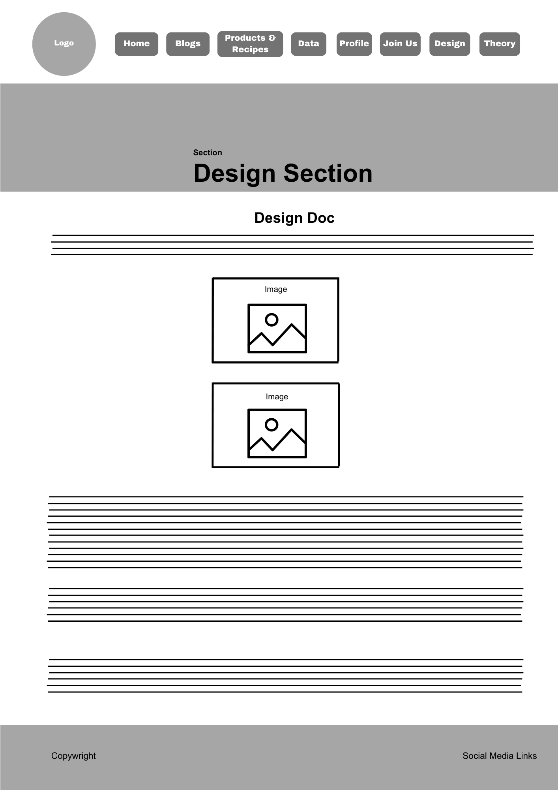
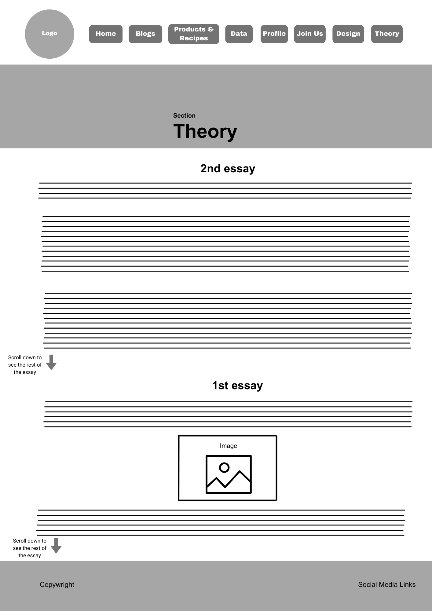

Updated Wireframes:


Summary of my Development Process for my Website:
Design and Style Guide:
- Colour Scheme: The website was previously designed as green and orange to be consistent with the old logo I used. However, I have changed it to darker green tones and lighter green to contrast it. I found that the colour scheme when improved when I did this as it gave my website an earthier aesthetic.
- Fonts: Different fonts were tested to complement the site's aesthetic. 'Poppins', 'Roboto', and 'Quicksand'. I would’ve wanted to explore more fonts to find one that is more fitting for a plant-based website, but I ran out of time.
- Button Styling: Buttons were designed with rounded corners, background colours, and hover states to enhance user interaction and usability. The buttons are more consistent this time as previously it wasn’t so majority of the buttons used all look the same.
Content and Layout:
- Layout: The homepage was structured to include background image section (#beginning-section) with animated text, introduction text stating the purpose of the website, and visually appealing blog previews so that the user can be redirected to the blog page to see more. Content sections were separated using padding and flexbox alignment to maintain consistent spacing and responsiveness. The blog previews were improved as feedback specified it needed more spacing, gap values increased. There is a section for the rest of the pages to indicate the page by name to inform the user. However, the form page does not include it as I felt it was unnecessary, the page looks more aesthetically pleasing without it. Another page that does not have it I the profile page and that is because I wanted the intro to stand out.
- Responsive Design: Flexbox properties like flex-wrap: wrap and media queries were used to ensure elements (e.g., .blog-previews and .intro-section) adjust smoothly for smaller screens. Generally, this was implemented on all the pages.
- Header and Footer: The header incorporates a navigation bar along with a logo, and the footer includes contact and social media links styled with flexbox. However, I did notice that on some pages my footer is not positioned correctly but I did not have enough time to fix it.
Data Visualizations:
- D3.js Integration: Interactive maps and graphs displaying vegan and vegetarian data, including some comparisons were developed using D3.js. I went from manually recording data to using an API. It finally worked this time, and I express more of my development process on the theory section of this website.
Data Challenges Faced:
- Data Accuracy: Each graph has its own API and because I struggled to get accurate data, it required multiple trail and error states throughout programming which meant that after every change, it led to continuous page refreshing which led to API keys being disabled due to API usage limitations, therefore payment was required. I had to use many emails for new APIs, which became difficult as I kept running out of emails and had to ask family members to use their emails.
- Alignment Issues: Titles and axis labels for graphs initially had alignment issues. This was resolved through CSS adjustments and D3 axis configuration. However, there are certain of the graphs that were not resolved, and I ended up just leaving it the way it is due to lack of time.
Media and Graphics:
- Image Integration: Careful attention was given to image optimization. Images were resized and I attempted to use HD images to ensure quality. However, I have no control over Recipe images as it is retrieved from the API I used for the recipes and the quality of the images is not of the highest standard (HD), it looks like a basic standard such as (SD).
- Animation Elements: Animation effects (e.g., hover states and transitions) were used to create a dynamic, engaging user experience.
Please read my Critical Reflection Essay for more information on my development process as it is expressed in depth, and I elaborate on it more specifically. Despite the issues I faced, I truly learnt a lot throughout the development of this website. My programming techniques have improved, my ability to research and test online tutorials and documents from coding websites has expanded my capabilities making me explore and learn a lot more. I know I have a lot more to learn and I would’ve wanted to continue working on the website to improve it and add more that I would’ve wanted to add. However, I think I completed most of the requirements for the exam and so I will work on it in the future.
Goal: Creating a commercial grade website that would showcase my interest in plant-based and vegan lifestyle.
Main Web development focusing on JavaScript, UI/UX design, and data visualizations using D3.js.
The process began with defining the core structure and design of the website, focusing on a vegan and plant-based lifestyle theme. I aimed for a visually appealing and functional design that reflects the site's purpose of educating and sharing plant-based recipes, blog posts, and data. The primary color palette consisted of green and orange to align with the theme of sustainability and health.
Development process:
Initially, the website theme was broad, but I decided to focus exclusively on vegan/plant-based blog posts & data for simplicity and alignment with my interests.
Challenges:
After adding blog posts, running out of time to add recipes
Understanding how to implement complex data visualizations with D3.js.
Data Visualizations: Initial Decisions and API Integration attempts as part of the website, I aimed to include at least two data visualizations: a bar/line graph and a map or bubble chart. One of the key goals was to show vegan and vegetarian trends globally.
I initially signed up for the Spoonacular API, hoping to pull data on plant-based products directly. However, integrating the API proved difficult:
The Spoonacular API didn’t have straightforward data related to plant-based product trends.
I encountered a 405 error on my GitHub Pages site when attempting to use the API.
Challenges:
Learning how to work with APIs and handling CORS (Cross-Origin Resource Sharing) errors.
Finding accurate, ready-made data on plant-based products for my specific theme.
Pivot to manual Data Entry for visualizations Given the complexity of using an external API, I switched to manually entering data for plant-based product trends. This decision allowed me to fully control the data being visualized, ensuring it matched the exact topic I wanted to highlight.
I used two datasets:
Statistics of how many vegans & vegetarians exist globally - percentage of population
Yearly global sales growth of plant-based products from 2020 to 2026.
Current sales and forecasts for specific categories (e.g., plant-based meat, dairy alternatives, etc.).
These datasets were manually entered into JSON files, which allowed me to solve the API issues entirely as I was running out of more time trying to solve the errors I encountered.There are also not a lot of API's for this specific data so I struggled to find them. The next solution was to change the theme, but I am too passionate about the theme and I had already done my blog posts and profile.
I initially signed up for the Spoonacular API, hoping to pull data on plant-based products directly. However, integrating the API proved difficult:
The layout included two main graphs: one to show the yearly sales growth and another to compare product sales and forecasts.
I used D3.js to create the graphs, which required understanding how to manipulate data, create scales, axes, and bars, and ensure proper responsiveness.
Challenges:
Learning how to use D3.js to render the graphs.
Managing alignment issues with the axes (e.g., Y-axis values not aligning properly with the grid).
Ensuring the axes had proper titles and labels for clarity.
Refining the Visuals Once the basic visualizations were in place, I refined them further:
Added titles for the X and Y axes to make the graphs more understandable.
Fixed alignment issues where the Y-axis values were sitting too close to the zero line. The Y-axis values were shortened as well.
Made design adjustments for a cleaner, more professional look.
At this stage, I decided to add the colour schemes, settling on green and orange hues to complement the plant-based theme of the website.
Challenges throughout the Process , several challenges stood out:
API integration difficulties: Using an external API like Spoonacular for specific plant-based product data was much more complicated than expected.
Data visualization learning curve: D3.js, though powerful, required an understanding of how to structure data and bind it to visual elements.
Design consistency: Maintaining a consistent and appealing design while working with various web technologies was a balancing act.
In the final phase, I ensured that both visualizations were fully functional and polished.
Recipes & Products:
Spoonacular API integration was successful for this part of the website
Decided to have vegan/vegetarian products to give users more accessible options either than just the recipes.
Products help with exposure, entire page adds to the commercial aspect of the website. It links with the blog posts as well.
Wireframes:


Key Design Elements:
Main sections: Included a data page with interactive data visualizations, a blog page, recipes/shopping page and a profile page introducing myself.
Profile section: The profile page features a large cartoon image of myself with a speech bubble saying, “Hi, I’m Kaycee Chantelle & I am passionate about living a plant-based lifestyle. Here is why…” This section was designed to make the website personal and engaging.
Profile Page with Typewriter Animation
The next step was adding a typewriter animation to the speech bubble on the profile page. This effect was achieved using D3.js to create a dynamic experience. The animation provided an interactive and fun introduction to the page.
Profile section: The profile page features a large cartoon image of myself with a speech bubble saying, “Hi, I’m Kaycee Chantelle & I am passionate about living a plant-based lifestyle. Here is why…” This section was designed to make the website personal and engaging.
More info & overview about data visualisation complications: Initially, I planned to use the Spoonacular API to pull data for the plant-based product visualization. However, after exploring the API, I encountered several challenges, such as complex API integration and the inconsistency of the available data. Due to these complications, I decided to manually create a JSON file for the data, sourcing statistics on plant-based lifestyles from trusted websites(linked below).
API limitations: I know that this will affect my marks, but because of time I really needed to find another solution to the problem. Please take into account that I still managed to create at least 3 presentable, interactive graphs which I enjoyed creating as well. You may mark me down for not using an API, however I did try my best to implement it and it failed. I did manage to use trusted sources for my data.
Sources of data for the visualizations:
Vegetarianism by country
World population Review - Veganism by country
World population Review - Vegetarianism by country
References:
Throughout the development process, I relied on various tutorials and documentation to enhance my understanding of D3.js, data visualization, and web design.